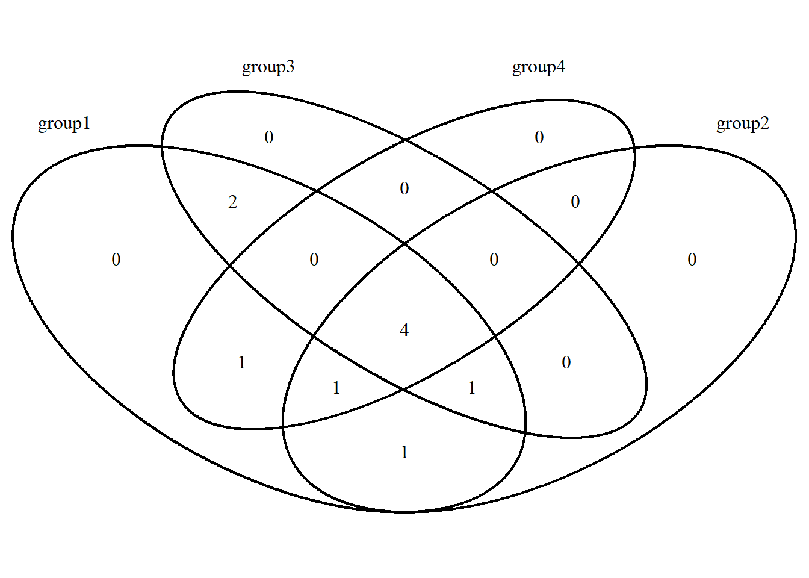

Chapter 9 R语言韦恩图
韦恩图主要用来展示不同组数据之间的交集
R语言里画韦恩图的R包最常用的可能是VennDiagram,最多可以展示5组数据之间的交集，每组数据单独准备到一个文件里
library(readxl)
dat01<-read_excel("example_data/09-venndiagram/dat01.xlsx")
dat02<-read_excel("example_data/09-venndiagram/dat02.xlsx")
dat03<-read_excel("example_data/09-venndiagram/dat03.xlsx")
dat04<-read_excel("example_data/09-venndiagram/dat04.xlsx")
library(VennDiagram)## Loading required package: grid## Loading required package: futile.logger##
## Attaching package: 'VennDiagram'## The following object is masked from 'package:ggtree':
##
## rotatex<-list(group1=dat01$gene_name,
group2=dat02$gene_name,
group3=dat03$gene_name,
group4=dat04$gene_name)
venn.diagram(x,filename = NULL) -> p1
grid::grid.draw(p1)
有很多参数可以调节，这里介绍一下比较常用的
library(readxl)
dat01<-read_excel("example_data/09-venndiagram/dat01.xlsx")
dat02<-read_excel("example_data/09-venndiagram/dat02.xlsx")
dat03<-read_excel("example_data/09-venndiagram/dat03.xlsx")
dat04<-read_excel("example_data/09-venndiagram/dat04.xlsx")
library(VennDiagram)
x<-list(group1=dat01$gene_name,
group2=dat02$gene_name,
group3=dat03$gene_name,
group4=dat04$gene_name)
venn.diagram(x,
filename = NULL,
main="ABC",
sub="abc",
fill=c("red","green","blue","yellow"),
col="grey",
cat.cex=3) -> p1
grid.draw(p1)
ggplot2没有专门做venn图的函数，有人开发了ggplot2的扩展包用来画韦恩图
ggvenn https://github.com/yanlinlin82/ggvenn 最多能画4组数据
ggvenndiagram https://github.com/gaospecial/ggVennDiagram 最多能画7组数据
这里简单介绍一下ggvenn
安装直接运行install.packages("ggvenn")
准备数据和VennDiagram的一眼
作图代码
library(readxl)
dat01<-read_excel("example_data/09-venndiagram/dat01.xlsx")
dat02<-read_excel("example_data/09-venndiagram/dat02.xlsx")
dat03<-read_excel("example_data/09-venndiagram/dat03.xlsx")
dat04<-read_excel("example_data/09-venndiagram/dat04.xlsx")
x<-list(group1=dat01$gene_name,
group2=dat02$gene_name,
group3=dat03$gene_name,
group4=dat04$gene_name)
library(ggvenn)## Warning: package 'ggvenn' was built under R version 4.0.5ggvenn(x)ggvenn(x,
fill_color = c("blue", "yellow", "green", "red"),
fill_alpha = 0.5,
stroke_color = "grey",
stroke_alpha = 1,
stroke_size = 1,
stroke_linetype = "dashed",
set_name_color = "red",
set_name_size = 6,
text_color = "black",
text_size = 4,
label_sep = ",")VennDiagram 和 ggvenn 的每一个圈展示和每组数据集的多少并不是成比例的，比如第一组10个数据，第二组5个数据，第一组的圈应该比第二组的圈大
如果想要成比例的话，可以使用R包eulerr
这个整理数据集可能会复杂一些
可以画5个以上的韦恩图
dat<-c("First" = 25,
"Second" = 5,
"Third" = 5,
"First&Second" = 5,
"First&Third" = 5,
"Second&Third" = 3,
"First&Second&Third" = 3)
library(eulerr)## Warning: package 'eulerr' was built under R version 4.0.5plot(euler(dat),
fills = list(fill=c("red","blue",
"green","darkgreen",
"white","black",
"purple"),
alpha=0.5),
quantities = list(c(25,5,5,
1,1,1,1),
col="black",
cex=4),
labels = list(col="white",font=3,cex=2),
edges = list(col="darkgreen",lwd=5,
lty=1:3),
main = list(label=c("XiaoMing"),cex=5),
legend = list(labels=c("A","B","C"),
cex=5))韦恩图如果数据超过5组，还有一种展示方式如下，可以借助UpSetR包实现 https://github.com/hms-dbmi/UpSetR
输入数据和之前介绍的一眼
library(readxl)
dat01<-read_excel("example_data/09-venndiagram/dat01.xlsx")
dat02<-read_excel("example_data/09-venndiagram/dat02.xlsx")
dat03<-read_excel("example_data/09-venndiagram/dat03.xlsx")
dat04<-read_excel("example_data/09-venndiagram/dat04.xlsx")
x<-list(group1=dat01$gene_name,
group2=dat02$gene_name,
group3=dat03$gene_name,
group4=dat04$gene_name)
library(UpSetR)## Warning: package 'UpSetR' was built under R version 4.0.5upset(fromList(x),
order.by = "freq",
point.size = 3.5,
line.size = 2,
mainbar.y.label = "AAAA",
sets.x.label = "BBBB",
text.scale = c(1.3, 1, 5, 0.75),
main.bar.color="red")来自一篇NC论文的实际例子
https://github.com/PlantNutrition/Liyu
library(UpSetR)#R 3.5
otu_RA <- read.delim('example_data/09-venndiagram/otu_RA.txt', header = TRUE, row.names = 1, sep = '\t')
otu_RA[otu_RA > 0] <- 1
p <- upset(otu_RA,
nset = 7,
nintersects = 10,
order.by = c('degree','freq'),
decreasing = c(TRUE, TRUE),
mb.ratio = c(0.7, 0.3),
point.size = 1.8,
line.size = 1,
mainbar.y.label = "Intersection size",
sets.x.label = "Set Size",
main.bar.color = "#2a83a2",
sets.bar.color = "#3b7960",
queries = list(list(query = intersects,
params = list("BS","RS","RE","VE","SE","LE","P"),
active = T,
color="#d66a35",
query.name = "BS vs RS vs RE vs VE vs SE vs LE vs P")))
p